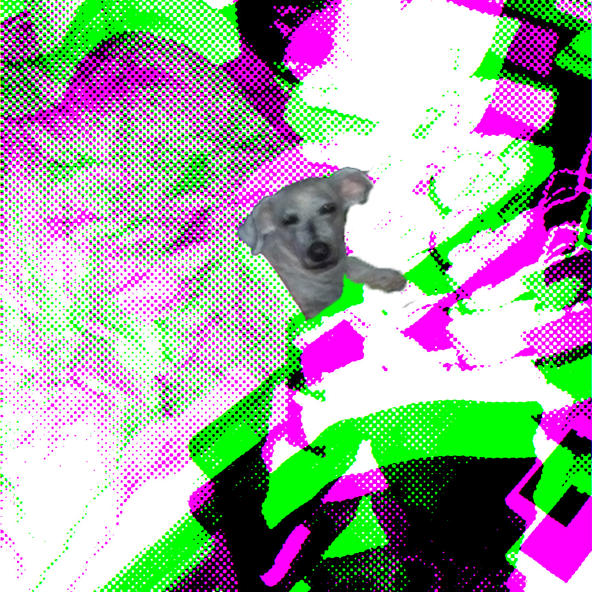

Explorando el Arte Multimedial
Nuevas fronteras de la interactividad
El cruce entre los lenguajes de programación, el diseño visual y el sonido digital abre un universo inagotable de posibilidades artísticas. A través del código, el artista deja de ser un creador estático para transformarse en un diseñador de sistemas interactivos y experiencias inmersivas.

Aprender las bases de tecnologías web como HTML y CSS es el primer paso fundamental en este trayecto. Estas herramientas permiten materializar ideas conceptuales en interfaces accesibles desde cualquier navegador del mundo.
Conceptos Clave de la Cátedra
- Estructura semántica clara para la legibilidad.
- Separación de responsabilidades (HTML para contenidos, CSS para estilos).
- Uso correcto del modelo de caja y selectores específicos.
- Organización modular de archivos en subcarpetas.